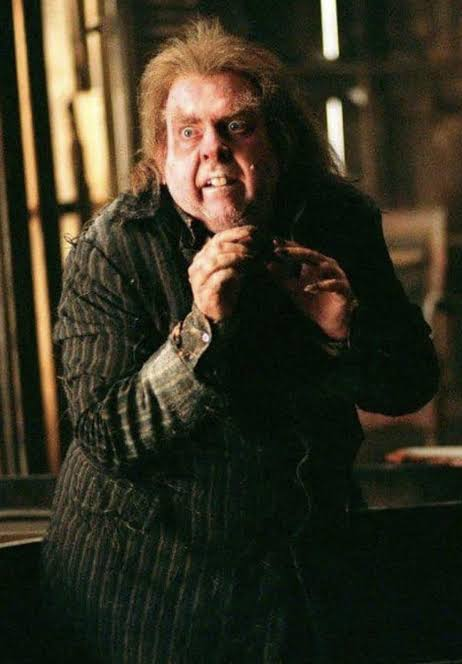

Uma coisa que aprendemos é que não se deve confiar em ratos: eles são traiçoeiros. Esperamos que não fique chateado, mas não deixaremos você ter acesso às nossas travessuras. Afinal, apesar de não ser sua culpa ser uma criatura tão peculiar e roedora, o perigo é iminente.
Se precisar de qualquer coisa, peça ao nosso amigo Sirius — ele pode te ajudar com isso.